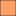

<!doctype html>
<html lang="en">
    <head>
        <meta charset="utf-8">
        <meta http-equiv="X-UA-Compatible" content="IE=edge">
        <meta name="viewport" content="initial-scale=1,user-scalable=no,maximum-scale=1,width=device-width">
        <meta name="mobile-web-app-capable" content="yes">
        <meta name="apple-mobile-web-app-capable" content="yes">
        <link rel="stylesheet" href="css/leaflet.css">
        <link rel="stylesheet" href="css/qgis2web.css"><link rel="stylesheet" href="css/fontawesome-all.min.css">
        <link rel="stylesheet" href="css/leaflet-control-geocoder.Geocoder.css">
        <link rel="stylesheet" href="css/leaflet-measure.css">
        <style>
        html, body, #map {
            width: 100%;
            height: 100%;
            padding: 0;
            margin: 0;
        }
        </style>
        <title></title>
    </head>
    <body>
        <div id="map">
        </div>
        <script src="js/qgis2web_expressions.js"></script>
        <script src="js/leaflet.js"></script>
        <script src="js/leaflet.rotatedMarker.js"></script>
        <script src="js/leaflet.pattern.js"></script>
        <script src="js/leaflet-hash.js"></script>
        <script src="js/Autolinker.min.js"></script>
        <script src="js/rbush.min.js"></script>
        <script src="js/labelgun.min.js"></script>
        <script src="js/labels.js"></script>
        <script src="js/leaflet-control-geocoder.Geocoder.js"></script>
        <script src="js/leaflet-measure.js"></script>
        <script src="data/Pasdedonnes_0.js"></script>
        <script src="data/Partdesclavesparrapportlapopulationglobale_1.js"></script>
        <script>
        var highlightLayer;
        function highlightFeature(e) {
            highlightLayer = e.target;

            if (e.target.feature.geometry.type === 'LineString') {
              highlightLayer.setStyle({
                color: '#ffff00',
              });
            } else {
              highlightLayer.setStyle({
                fillColor: '#ffff00',
                fillOpacity: 1
              });
            }
        }
        var map = L.map('map', {
            zoomControl:true, maxZoom:6, minZoom:2
        }).fitBounds([[-108.21719097401173,-178.96777090145267],[114.55901253946706,191.93711243512462]]);
        var hash = new L.Hash(map);
        map.attributionControl.setPrefix('<a href="https://github.com/tomchadwin/qgis2web" target="_blank">qgis2web</a> &middot; <a href="https://leafletjs.com" title="A JS library for interactive maps">Leaflet</a> &middot; <a href="https://qgis.org">QGIS</a>');
        var autolinker = new Autolinker({truncate: {length: 30, location: 'smart'}});
        var measureControl = new L.Control.Measure({
            position: 'topleft',
            primaryLengthUnit: 'feet',
            secondaryLengthUnit: 'miles',
            primaryAreaUnit: 'sqfeet',
            secondaryAreaUnit: 'sqmiles'
        });
        measureControl.addTo(map);
        document.getElementsByClassName('leaflet-control-measure-toggle')[0]
        .innerHTML = '';
        document.getElementsByClassName('leaflet-control-measure-toggle')[0]
        .className += ' fas fa-ruler';
        var bounds_group = new L.featureGroup([]);
        function setBounds() {
        }
        function pop_Pasdedonnes_0(feature, layer) {
            layer.on({
                mouseout: function(e) {
                    for (i in e.target._eventParents) {
                        e.target._eventParents[i].resetStyle(e.target);
                    }
                },
                mouseover: highlightFeature,
            });
            var popupContent = '<table>\
                    <tr>\
                        <td colspan="2"><strong>SOVEREIGNT</strong><br />' + (feature.properties['SOVEREIGNT'] !== null ? autolinker.link(feature.properties['SOVEREIGNT'].toLocaleString()) : '') + '</td>\
                    </tr>\
                    <tr>\
                        <td colspan="2"><strong>Tab_Est. number of people in modern slavery</strong><br />' + (feature.properties['Tab_Est. number of people in modern slavery'] !== null ? autolinker.link(feature.properties['Tab_Est. number of people in modern slavery'].toLocaleString()) : '') + '</td>\
                    </tr>\
                </table>';
            layer.bindPopup(popupContent, {maxHeight: 400});
        }

        function style_Pasdedonnes_0_0() {
            return {
                pane: 'pane_Pasdedonnes_0',
                opacity: 1,
                color: 'rgba(35,35,35,1.0)',
                dashArray: '',
                lineCap: 'butt',
                lineJoin: 'miter',
                weight: 1.0, 
                fill: true,
                fillOpacity: 1,
                fillColor: 'rgba(209,209,209,0.9764705882352941)',
                interactive: true,
            }
        }
        map.createPane('pane_Pasdedonnes_0');
        map.getPane('pane_Pasdedonnes_0').style.zIndex = 400;
        map.getPane('pane_Pasdedonnes_0').style['mix-blend-mode'] = 'normal';
        var layer_Pasdedonnes_0 = new L.geoJson(json_Pasdedonnes_0, {
            attribution: '',
            interactive: true,
            dataVar: 'json_Pasdedonnes_0',
            layerName: 'layer_Pasdedonnes_0',
            pane: 'pane_Pasdedonnes_0',
            onEachFeature: pop_Pasdedonnes_0,
            style: style_Pasdedonnes_0_0,
        });
        bounds_group.addLayer(layer_Pasdedonnes_0);
        map.addLayer(layer_Pasdedonnes_0);
        function pop_Partdesclavesparrapportlapopulationglobale_1(feature, layer) {
            layer.on({
                mouseout: function(e) {
                    for (i in e.target._eventParents) {
                        e.target._eventParents[i].resetStyle(e.target);
                    }
                },
                mouseover: highlightFeature,
            });
            var popupContent = '<table>\
                    <tr>\
                        <td colspan="2"><strong>Pays</strong><br />' + (feature.properties['SOVEREIGNT'] !== null ? autolinker.link(feature.properties['SOVEREIGNT'].toLocaleString()) : '') + '</td>\
                    </tr>\
                    <tr>\
                        <td colspan="2"><strong>Nombre d\'esclave </strong><br />' + (feature.properties['Tab_Est. number of people in modern slavery'] !== null ? autolinker.link(feature.properties['Tab_Est. number of people in modern slavery'].toLocaleString()) : '') + '</td>\
                    </tr>\
                    <tr>\
                        <td colspan="2"><strong>Pourcentage d\'esclave par rapport à la population globale </strong><br />' + (feature.properties['Tab_Part de la population asservie en pourcentage'] !== null ? autolinker.link(feature.properties['Tab_Part de la population asservie en pourcentage'].toLocaleString()) : '') + '</td>\
                    </tr>\
                </table>';
            layer.bindPopup(popupContent, {maxHeight: 400});
        }

        function style_Partdesclavesparrapportlapopulationglobale_1_0(feature) {
            if (feature.properties['Tab_Part de la population asservie en pourcentage'] >= 0.030000 && feature.properties['Tab_Part de la population asservie en pourcentage'] <= 0.500000 ) {
                return {
                pane: 'pane_Partdesclavesparrapportlapopulationglobale_1',
                opacity: 1,
                color: 'rgba(35,35,35,1.0)',
                dashArray: '',
                lineCap: 'butt',
                lineJoin: 'miter',
                weight: 1.0, 
                fill: true,
                fillOpacity: 1,
                fillColor: 'rgba(175,212,114,1.0)',
                interactive: true,
            }
            }
            if (feature.properties['Tab_Part de la population asservie en pourcentage'] >= 0.500000 && feature.properties['Tab_Part de la population asservie en pourcentage'] <= 1.240000 ) {
                return {
                pane: 'pane_Partdesclavesparrapportlapopulationglobale_1',
                opacity: 1,
                color: 'rgba(35,35,35,1.0)',
                dashArray: '',
                lineCap: 'butt',
                lineJoin: 'miter',
                weight: 1.0, 
                fill: true,
                fillOpacity: 1,
                fillColor: 'rgba(255,240,182,1.0)',
                interactive: true,
            }
            }
            if (feature.properties['Tab_Part de la population asservie en pourcentage'] >= 1.240000 && feature.properties['Tab_Part de la population asservie en pourcentage'] <= 4.000000 ) {
                return {
                pane: 'pane_Partdesclavesparrapportlapopulationglobale_1',
                opacity: 1,
                color: 'rgba(35,35,35,1.0)',
                dashArray: '',
                lineCap: 'butt',
                lineJoin: 'miter',
                weight: 1.0, 
                fill: true,
                fillOpacity: 1,
                fillColor: 'rgba(255,158,98,1.0)',
                interactive: true,
            }
            }
            if (feature.properties['Tab_Part de la population asservie en pourcentage'] >= 4.000000 && feature.properties['Tab_Part de la population asservie en pourcentage'] <= 10.460000 ) {
                return {
                pane: 'pane_Partdesclavesparrapportlapopulationglobale_1',
                opacity: 1,
                color: 'rgba(35,35,35,1.0)',
                dashArray: '',
                lineCap: 'butt',
                lineJoin: 'miter',
                weight: 1.0, 
                fill: true,
                fillOpacity: 1,
                fillColor: 'rgba(255,0,0,1.0)',
                interactive: true,
            }
            }
        }
        map.createPane('pane_Partdesclavesparrapportlapopulationglobale_1');
        map.getPane('pane_Partdesclavesparrapportlapopulationglobale_1').style.zIndex = 401;
        map.getPane('pane_Partdesclavesparrapportlapopulationglobale_1').style['mix-blend-mode'] = 'normal';
        var layer_Partdesclavesparrapportlapopulationglobale_1 = new L.geoJson(json_Partdesclavesparrapportlapopulationglobale_1, {
            attribution: '',
            interactive: true,
            dataVar: 'json_Partdesclavesparrapportlapopulationglobale_1',
            layerName: 'layer_Partdesclavesparrapportlapopulationglobale_1',
            pane: 'pane_Partdesclavesparrapportlapopulationglobale_1',
            onEachFeature: pop_Partdesclavesparrapportlapopulationglobale_1,
            style: style_Partdesclavesparrapportlapopulationglobale_1_0,
        });
        bounds_group.addLayer(layer_Partdesclavesparrapportlapopulationglobale_1);
        map.addLayer(layer_Partdesclavesparrapportlapopulationglobale_1);
        var osmGeocoder = new L.Control.Geocoder({
            collapsed: true,
            position: 'topleft',
            text: 'Search',
            title: 'Testing'
        }).addTo(map);
        document.getElementsByClassName('leaflet-control-geocoder-icon')[0]
        .className += ' fa fa-search';
        document.getElementsByClassName('leaflet-control-geocoder-icon')[0]
        .title += 'Search for a place';
        var baseMaps = {};
        L.control.layers(baseMaps,{'Part d\'esclaves par rapport à la population globale <br /><table><tr><td style="text-align: center;"></td><td>0,03 - 0,5</td></tr><tr><td style="text-align: center;"></td><td>0,5 - 1,24</td></tr><tr><td style="text-align: center;"></td><td>1,24 - 4</td></tr><tr><td style="text-align: center;"></td><td>4 - 10,46</td></tr></table>': layer_Partdesclavesparrapportlapopulationglobale_1,' Pas de données': layer_Pasdedonnes_0,}).addTo(map);
        setBounds();
        resetLabels([layer_Partdesclavesparrapportlapopulationglobale_1]);
        map.on("zoomend", function(){
            resetLabels([layer_Partdesclavesparrapportlapopulationglobale_1]);
        });
        map.on("layeradd", function(){
            resetLabels([layer_Partdesclavesparrapportlapopulationglobale_1]);
        });
        map.on("layerremove", function(){
            resetLabels([layer_Partdesclavesparrapportlapopulationglobale_1]);
        });
        </script>
    </body>
</html>
